BI for beginners (session 3)
Power BI
beginner
Previous attendees have said…
- 60 previous attendees have left feedback
- 100% would recommend this session to a colleague
- 97% said that this session was pitched correctly
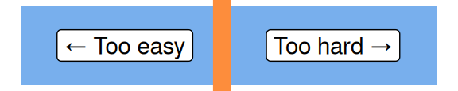
Three random comments from previous attendees
- Great to learn the available tools and it have awareness of the restriction faced in various boards and general training on this software attempted from external sources became useless with NHS IT restrictions etc
- Very useful and it was particularly interesting seeing/hearing of the different issue users were having because of the differences in the version of Excel/Power Bi they had available to them. My heart goes out to eHealth because it’s incredibly difficult to keep everyone right and happy at the same time.
- Great session, easy to follow, looking forward to developing my skills in Power BI over the next few sessions.
Forthcoming session(s)
| Booking link | Date |
|---|---|
| BI for beginners (session 3) | 14:00-16:00 Thu 2nd October 2025 |
| BI for beginners (session 3) | 14:00-16:00 Tue 18th November 2025 |
Session outline
If you’d like to get a sense of the core content, you might have a look at the video outline for this session:
- In this session, we’re going to build part of the GP practice size dashboard from last time
- But we’ll do this from raw data, rather than the play data we used last time
- We’ll bring that data in directly from the web
- We’ll need to wrangle that data to get it to behave
Data wrangling
- several different sources needed
Load our data
Task
- Open Power BI and start a new report
- Use the Get data menu to load data from the web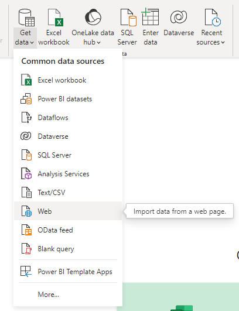
- Load each of the three URLs supplied in the chat
Inspect our data
- You should have seen a preview during data loading, but you should now inspect each of the data sets via the data view
- What will we need to do to use them to reproduce the dashboard from last time?
Task list
- My data came across with horrible names. Let’s rename to practices, boards, and demographics
- we can discard some of the practices data
- we’ll need to join boards and practices to get nice health board names in our dashboard
- we’ll need to re-shape demographics
Wrangling
- we’ll do our data wrangling using Power Query
Task
- In the data view, select Transform data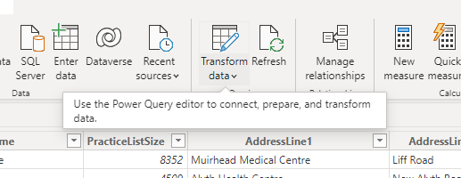
Discarding data
- (duty of data minimization) 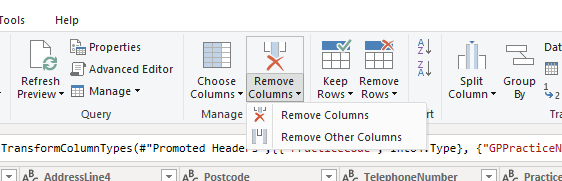
- we can safely lose several columns:
- TelephoneNumber, PracticeType, Dispensing are all spare
- HSPC and DataZone are more directly useful, although we actually won’t use them
- you can use the applied steps box in Query Settings to review (or undo) changes to your data
Joining data
- there’s an HB column in both the boards and practices data
- we can link these up so that we can use the actual proper health board names in our dashboard
Task
- select the HB column and select Merge Queries 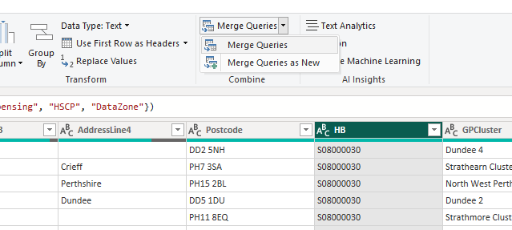
- fill in the options in the merge pop-up 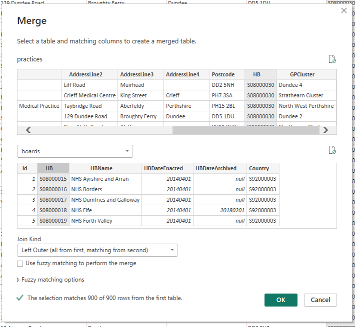
- note that this gives us lots of information about how the join is likely to work
- a slight puzzle: the join initially looks pretty unpromising 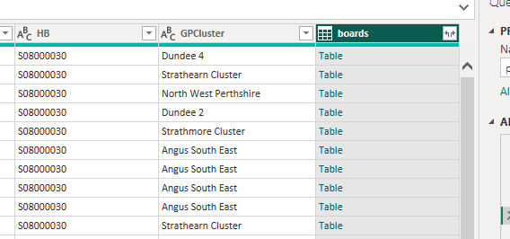
- here, Power Query is effectively telling you that there’s a table row packed into each of these cells. That row is the matching row from the boards data that matched our HB column in the practices data
- we can unpack all or some of the columns from each row using the menu in the column header.
- I think we only want HBName - but feel free to experiment as you can always backtrack from the query settings pane
Task
- select the column(s) you want to keep from the column header 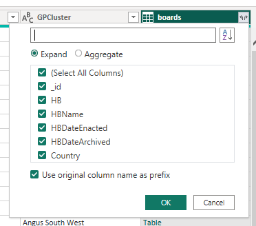
- you can also access lots of other Excel-ish options by right-clicking the column
- something we can do there is to rename this column to give a nicer name (which we’ll need to use later while building our visualisation)
Task
- please rename your new column to “HBName”
- note that you can also do this inside the formula bar at the top of the screen 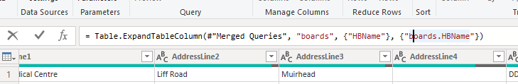This formula is written in Power Query M, which we’ll discuss later
- check that you now have nice board names in the practices data
- remember to close & apply
Re-shaping data
- our demographics data is going to be hard to plot
- we’ll reshape it using Power Query to make our life easier
Task
- As before, please Transform Data
- Use the Select columns tool (or delete as before) to remove the id, Date, HSPC, HB, and SexQF columns
- You can do this in Power Query directly with
= Table.RemoveColumns(#"Changed Type",{"_id", "Date", "HB", "HSCP", "SexQF"}) - Select the PracticeCode and Sex columns, then select Unpivot Other Columns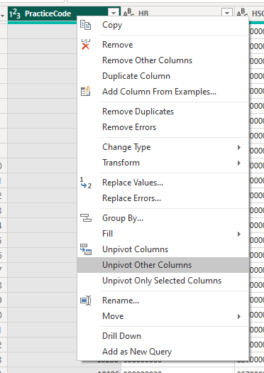
- That should give us something that looks like this: 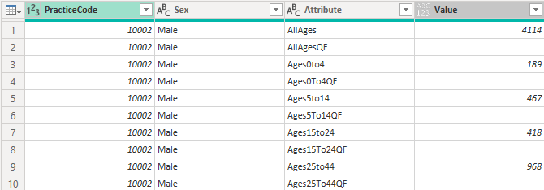
- we can now remove unwanted values by filtering 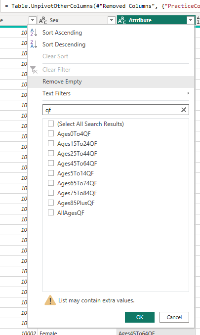
Task
- From the Attribute column, please remove the QF rows,
- From the Attribute column, please remove the AllAges rows
- From the Sex column, please remove the All rows
- the last type of reshaping to show off is about transforming values
Task
- Split the Attribute column by Digit to Non-digit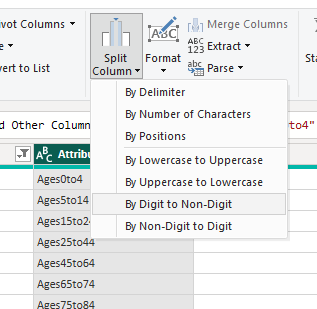
- replace values in the new Attribute.1 column to remove the “Ages”
- then in Attribute.2, two replacements to remove the “to”s and replace the “plus” with 99
- then rename the columns to age_upper and age_lower
- finally, change the data type to whole number for each of those new columns
Tidying up
- we should now be able to use this data to re-make our GP bubble map from last time.
- there are some minor bits of tidying up that need to happen first
- there are a few duplicate practice names, which might cause us problems 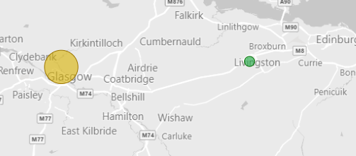
- so we’ll transform each name to include the postcode to avoid this happening
Task
- select Transform data
- add a Custom column called Practice Name 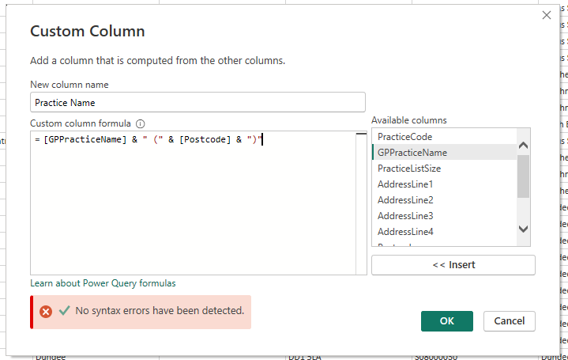
- use
&to concatenate values:[GPPracticeName] & " (" & [Postcode] & ")" - close and apply
- Power BI likes to summarise data wherever possible
- this can cause problems (although I don’t think there’s anything in this example that suffers from it)
Task
- Go to the data view
- In the practices table, note that you can change the summary options for the PracticeListSize column 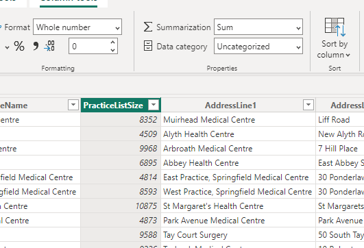
Re-making our visualisation
Task
- Add a map, and set the Postcode to Location, boards.HBName to Legend, PracticeListSize to Bubble Size
- Format the map to greyscale
- Rename for this visual to suit
- add a slicer for Health board
- add cards for the list size and practice name
- add a stacked column chart for practice sizes
Finishing up
- next time, we’ll use some of that data we wrangled today to extend our GP dashboard
- please save your file somewhere safe
- if you have time during the week, come back to the visualisations that we sketched today, and play. What would you like to add to the dashboard?
- there’s a lot of demographic data to play with
- Let me know, and we’ll try adding those things next time